| テスト理論 |
| テスト理論 |
一般化可能性理論では、データが得られる構造に応じて、測定モデルを柔軟に変化させる。
Table 8 のように1つの課題に対して複数の採点が行われる場合、古典的テスト理論に準じれば、回答者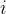 (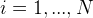) における採点者 (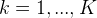) による採点結果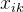は、
(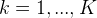) による採点結果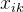は、
| 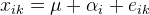 | (81) |
のように表現できる。 ただし、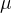は総平均、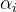が回答者の能力による部分で、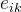が誤差である。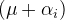 の部分が真値ということになる。
一方、この誤差から採点のばらつきによる部分を取り除くことができる。
| 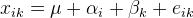 | (82) |
この場合、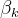が採点者間での採点のばらつきを示す部分であり、はそれ以外の理由で得点が変動するような誤差ということになる。
ここで、得られたデータ全体のばらつきを
| 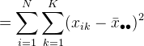 | (83) |
と表す。 このとき、
| 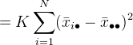 | (84) | |||
| 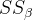 | 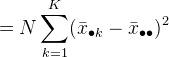 | (85) | ||
| 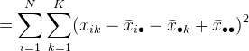 | (86) |
とすると、
| 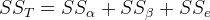 | (87) |
という関係にあることが知られている。
式(82) の、、 の分散をそれぞれ 、
、 、
、 とすると、これらは
とすると、これらは
| 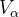 | 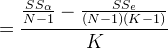 | (88) | ||
| 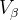 | 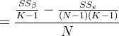 | (89) | ||
| 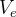 | 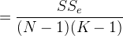 | (90) |
と計算できることが知られている。
Table 8 のデータを用いてそれぞれの分散を計算すると、Table 9 のようになる。
|
|
|
0.094633 |
0.002233 |
0.004433 |
こうした情報は、得点の大小が何によってどれくらい生じているのか判断する上で重要である。 このように、得られたテストデータにおける変動要因の分散を見積もることを、一般化可能性理論ではD研究という。
| テスト理論 |